Vistas previas al compartir
La imagen que sale al pegar el enlace en WhatsApp o en redes, con Parla en el centro. Generadas con
el mismo motor que las de la web (prototipos/carteles.mjs). Solo para revisar: el build
sigue usando las de ahora. Volver al prototipo.
General · «Parla, a la cola»
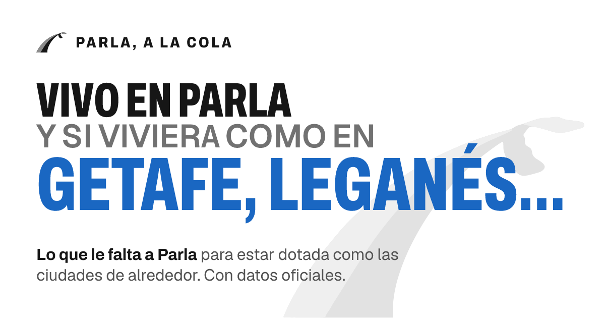
General · «Pobre Parla»
Una por ciudad
La cifra es la de la portada del prototipo: lo que le faltaría a Parla con la proporción de cada una.
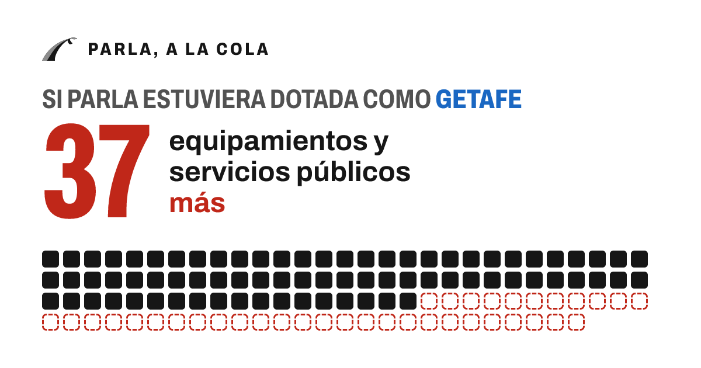
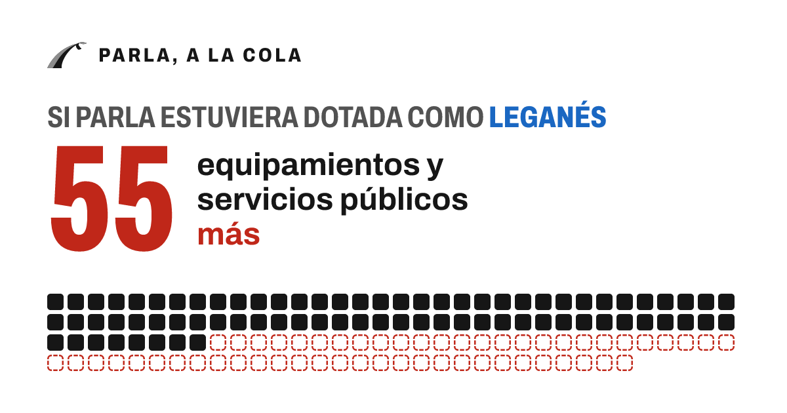
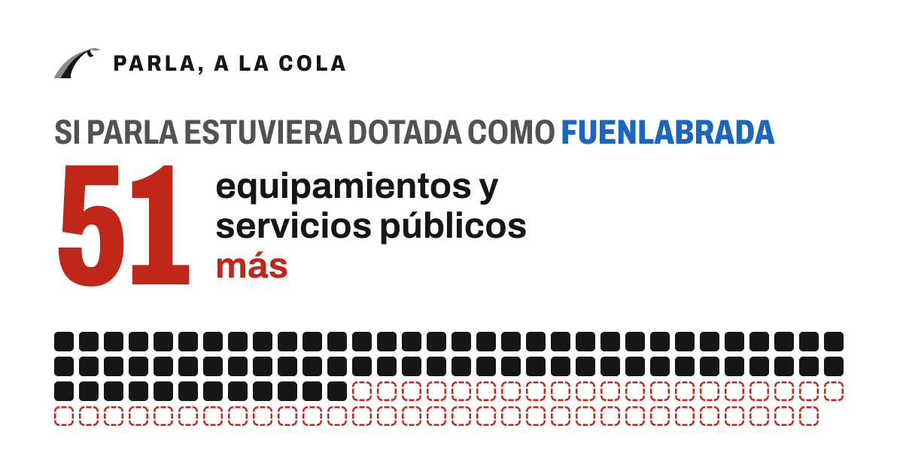
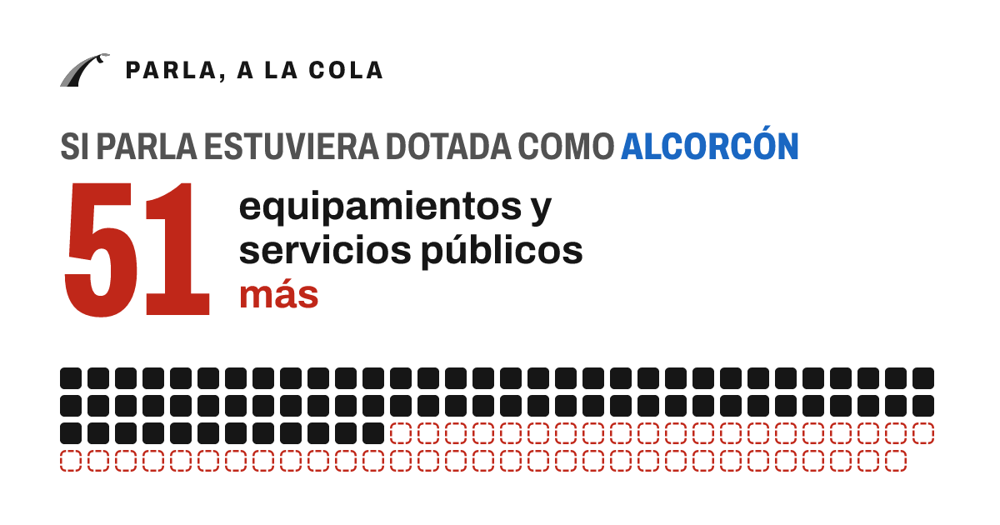
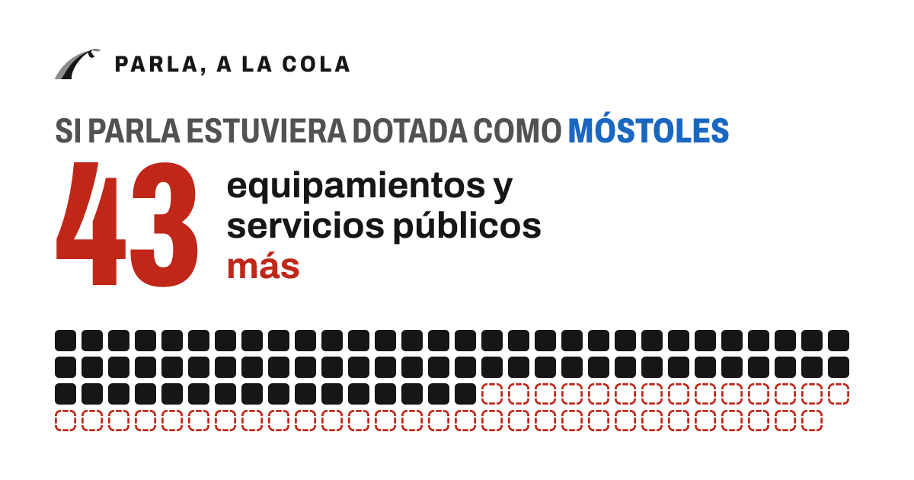
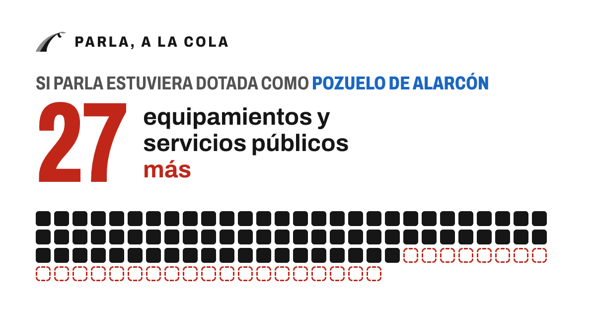
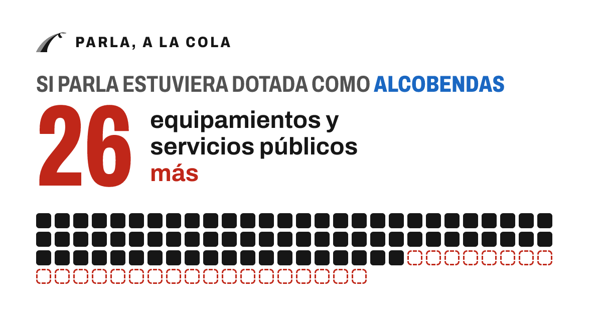
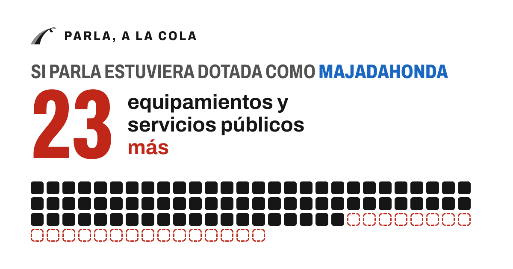
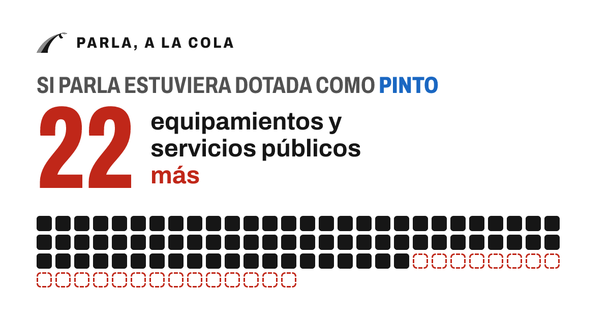
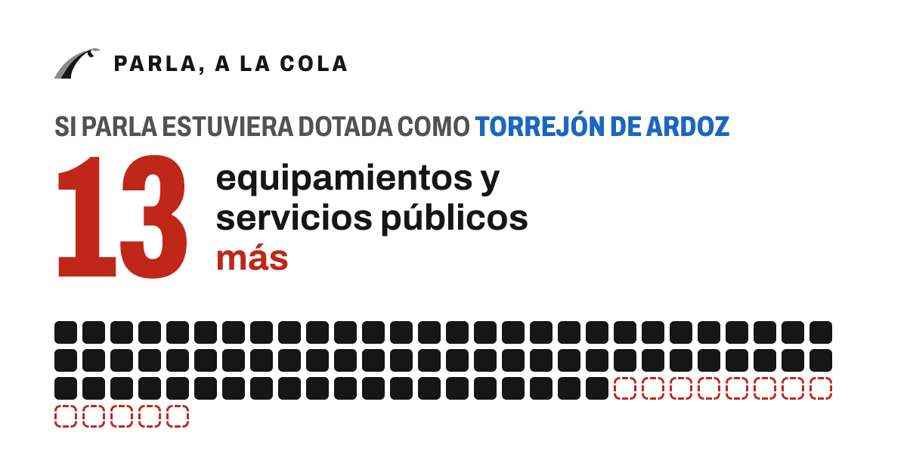